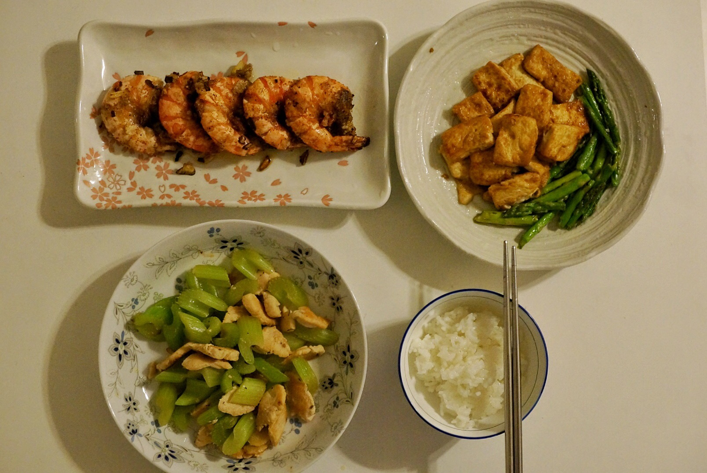

#30分钟快手菜# 椒盐大虾+香煎嫩豆腐配芦笋+芹菜炒鸡片+饭

文章目录
今天花了45分钟煮了三个菜：椒盐大虾、香煎嫩豆腐配芦笋和芹菜炒鸡肉。椒盐是现配的感觉哪里还是不太对。豆腐倒是很好吃，不过芦笋没怎么煎好。鸡肉有点老不过芹菜还挺鲜的。花的时间越来越久了，速度还是有待提升啊~
椒盐大虾：冰冻的大虾在使用冷水化开后，在料酒中浸泡10分钟，同时准备葱、姜、蒜末。起油锅，将虾中火煎红后盛出，在芡粉与调配的椒盐（五香粉+黑椒+盐，木有白胡椒嘤嘤嘤）中拌匀。另起一油锅，葱姜蒜末爆香后将虾再炒一次，出锅。
香煎嫩豆腐配芦笋：将豆腐切成麻将块大小，在沸盐水中淖熟。起油锅，中火每面煎大概5分钟。倒入适量酱油、糖、酒（大概水也可以？），拌匀后大火收汁。另洗芦笋掰段煎熟装盘。
芹菜炒鸡肉：鸡胸肉切片，撒香料（Thyme）和粗盐腌制10分钟，同时芹菜切段。起油锅，大火下鸡片，略焦黄时入芹菜炒匀。加水烧开焖锅5分钟后出锅。（鸡肉有点老，可能下次下鸡片时油温要更热一点为妙。）

文章作者 ziyunch
上次更新 2016-01-11